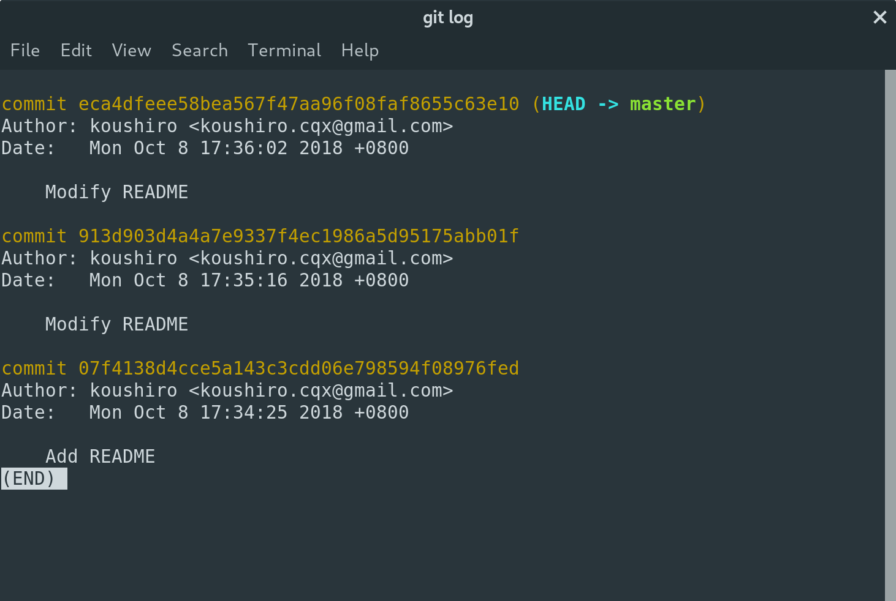
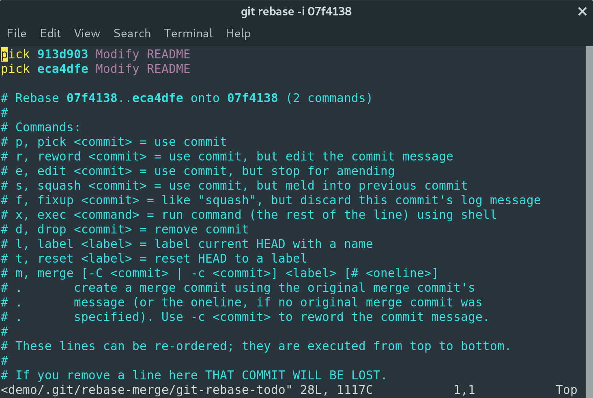
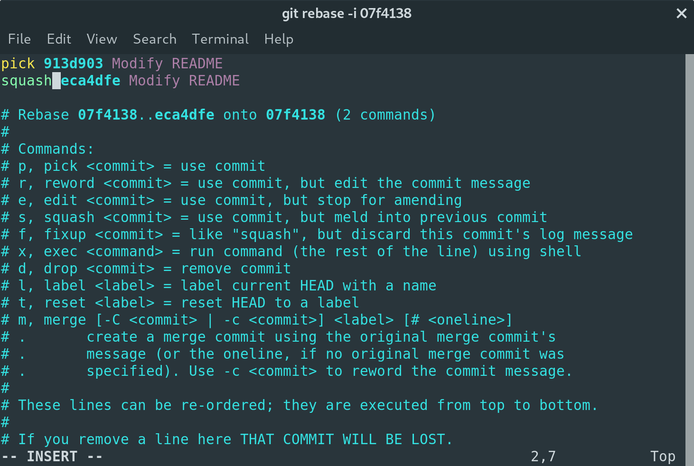
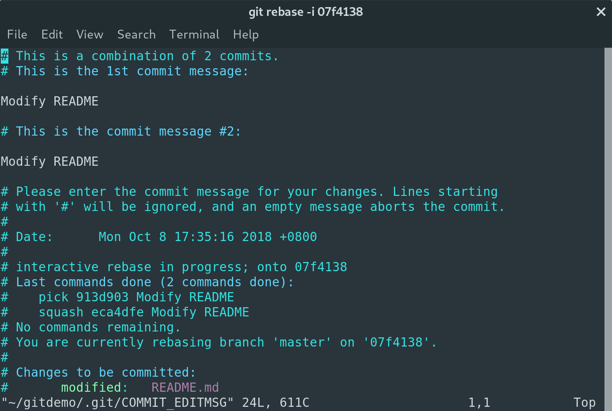
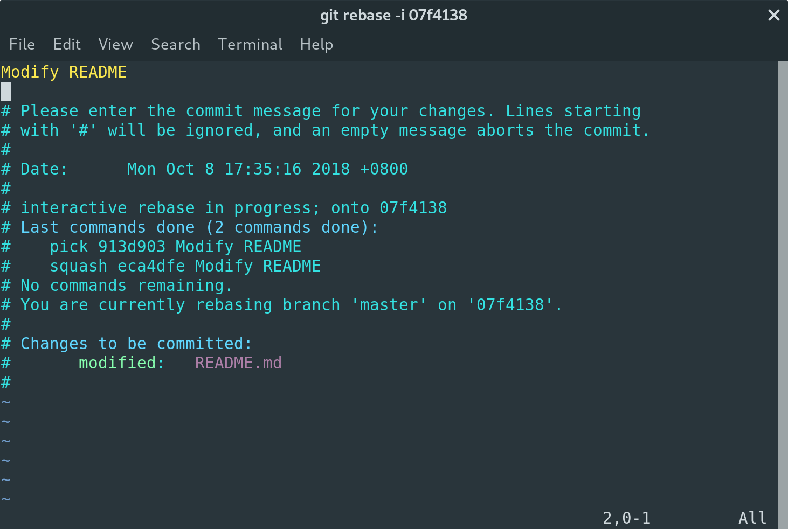
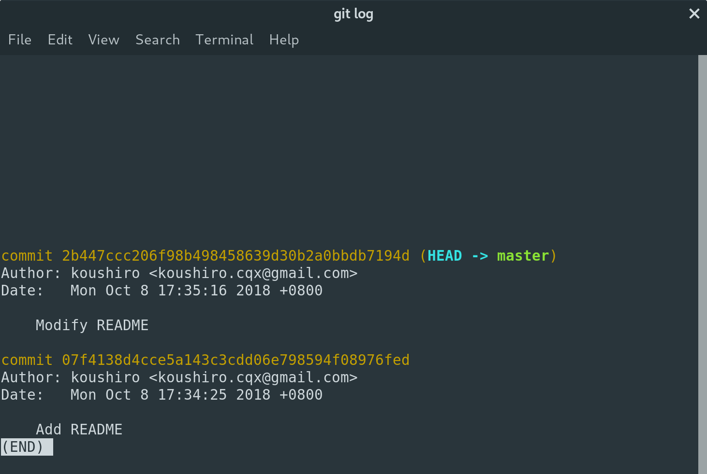

Learn Git
See the link below for the full usage of Git.
Git流程
流程分为4个区域：
- 工作区 (Workspace)
- 暂存去 (Staging Area)
- 本地仓库 (Local Repository)
- 远程仓库 (Remote Repository)
4个区域划分了5种状态：
- 初始 (Origin)
- 已修改/未跟踪 (Modified & Untracked)
- 已暂存 (Staged)
- 已提交 (Committed)
- 已推送 (Pushed)
1 | # How to get a git repository? |
常用的Git命令列表
1 | add -- add file contents to index |
远程仓库的关联和管理
git remote 命令被用于关联和管理远程仓库，常用选项的名字一眼就能看出作用。
1 | add -- add a new remote |
举个栗子，给github上不属于自己的项目贡献代码时，需要先把该项目fork到自己账户中，然后将fork的仓库clone到本地，但可能在贡献过程中原有（上游）仓库有新的提交，你最好使自己的fork仓库与原有（上游）仓库保持一致。
1 | git clone https://github.com/your_name/project.git |
撤销更改
已修改，未暂存 (即 git add 命令之前)，所有的修改文件都还在工作区，并没进入暂存区，此时撤销工作区修改:
1 | # 检查工作区和暂存区之间的差异，列出所有差异 |
已暂存，未提交（即 git add 命令之后，git commit 命令之前），被 add 的文件都进入了暂存区，但并没进入本地仓库，此时撤销暂存区修改（可选择是否同时撤销工作区修改）:
1 | # 检查暂存区和本地仓库之间的差异，列出所有差异 |
已提交，未推送（即 git commit 命令之后，git push 命令之前），所有暂存区的文件都进入了本地仓库，但还没被推送到远程仓库，此时撤销本地仓库修改:
1 | # 检查本地仓库与远程仓库之间的差异，列出所有差异 |
已推送（即 git push 命令之后），本地仓库文件已同步到远程仓库，你说你手速咋这么快？
1 | # 本地仓库退回到某一个commit |
一些常见情况可以不用撤销更改就能解决:
git commit后发现之前git add的文件少了:1
2
3
4
5
6
7
8# 直接添加上次 `git commit` 缺少的文件到暂存区
git add <file-name>
# 此命令会将暂存区中的文件提交，
# 如果自上次提交以来你还未做任何修改（例如，在上次提交后马上执行了此命令），
# 那么快照会保持不变，而你所修改的只是提交信息
# 最终你只会有一个提交 - 第二次提交将代替第一次提交的结果。
git commit --amend刚刚
git commit的信息写错了:1
2# 修改commit信息，最终你只会有一个提交 - 第二次提交将代替第一次提交的结果。
git commit --amend
分支的管理
使用 Git 管理的项目通常都使用分支开发工作流。
新建仓库后，Git 默认生成的 master 分支常常被作为长期分支，只在 master 分支上保留完全稳定的代码，也有可能仅仅是已经发布或即将发布的代码。
除了 master 这样的长期分支外还有一些名为 develop 或者 next 的长期分支，被用来做后续开发或者测试稳定性，这些分支不必保持绝对稳定，但是一旦达到稳定状态，它们就可以被合并入 master 分支。
还有一类特性分支，只是短期存在，被用来实现单一特性或者解决某一问题。在完成特定任务后合并入主干分支就可以删除掉它们了。
新建分支并切换:
1 | # 最初始的时候工作区处在 master 分支 |
完成分支上的工作，测试通过并提交了，接下来打算将该分支合并到主干分支，但在这之前还有件事要考虑。
由于项目参与的人数过多，每个人都自己新建分支工作，那么分支数目也就多，可能完成自己分支的工作后，其他项目参与者已经往远程仓库的 master 提交了很多代码，这时需要先拉取最新的代码才能做之后的分支合并的工作:
1 | git checkout master |
由于拉取的最新代码中可能有多人修改了自己分支中涉及到的文件，这可能会产生合并冲突，此时就需要人工干预修复冲突内容再合并。
最终完成工作的分支合并回本地的 master 分支后，就可以删除该新建分支，并推送本地仓库的 master 分支到远程仓库的 master 分支了:
1 | git checkout master |
上面提及到的新建分支都是在本地仓库中操作的，但实际开发过程常常也需要将新建分支推送到远程仓库。
还是以上面 远程仓库的关联和管理 部分提到的给 Github 开源项目贡献代码的栗子来讨论。
咱个人通常都是新建分支，在该分支上完成编码任务，推送到 fork 仓库，然后提出 PR 的。
1 | git remote -v |
在提出 PR 和合并 PR 之间可能上游仓库有新代码的提交，你可以按照 远程仓库的关联和管理 部分提到的，将上游仓库的最新提交更新到 fork 仓库，或者直接在 Github 的该 PR 页面一键解决（个人推荐）。
注意的坑: PR 的提出一般都会有 CI/CD 工具的帮助，若贡献的开源项目中使用到 Jenkins 时，新建分支的名字不要有 # 之类的特殊字符，这会导致 Jenkins 无法成功通过。
git config
当配置Git时，加上--global选项是作用于当前用户，如果不加，那只针对当前的仓库起作用。
当前用户的Git配置文件位于 /home/user/.gitconfig.
当前仓库的Git配置文件位于 /path/to/git-repo/.git/config.
My .gitconfig:
1 | [user] |
git log
My custom log format:
1 | git config --global alias.lg log --all --graph --pretty=format:'%Cred%h%Creset -%C(yellow)%d%Creset %s %Cgreen(%cr) %C(bold blue)<%an>%Creset' --abbrev-commit --date=relative |
Other helpful options:
1 | git lg -2 # shows only the last two entries. |
git tag
标签一般用来标记发布节点（v1.0 等等）。
列出标签:
1 | git tag |
Git 使用两种主要类型的标签：轻量标签（lightweight）与附注标签（annotated）。
附注标签（annotated）
1
2
3
4
5
6
7
8
9
10
11
12
13
14
15
16
17
18
19
20
21# 使用 -a 选项创建 附注标签
git tag -a v1.4.0 -m 'my version 1.4.0'
git tag
# v1.0.0
# v1.0.1
# v1.0.2
# v1.1.0
# v1.2.0
# v1.3.0
# v1.4.0
# 可以看到标签信息与对应的提交信息
git show v1.4.0
# tag v1.4.0
# Tagger: koushiro <koushiro.cqx@gmail.com>
# Date: Sun Sep 23 01:16:39 2018 +0800
# my version 1.4.0
# commit 34115da0eb65d4e267c59b1a783c09e2e621db93...轻量标签（lightweight）
1
2
3
4
5
6
7
8
9
10
11
12
13
14
15
16
17# 轻量标签本质上是将提交校验和存储到一个文件中 - 没有保存任何其他信息。
# 创建轻量标签，不需要使用 -a、-s 或 -m 选项，只需要提供标签名字
git tag v1.4.0-lw
git tag
# v1.0.0
# v1.0.1
# v1.0.2
# v1.1.0
# v1.2.0
# v1.3.0
# v1.4.0
# v1.4.0-lw
# 不会看到额外的标签信息，只会显示出提交信息
git show v1.4.0-lw
# commit 34115da0eb65d4e267c59b1a783c09e2e621db93...
除了对当前最新的提交打上标签，也可以对过去的提交打标签。
1 | git tag -a v1.2.1 -m "my version 1.2.1" <hash-code> |
默认情况下，git push 命令并不会推送标签到远程仓库中， 因此在创建完标签后必须显式地推送标签到远程仓库中。
1 | git push <remote-name> <tag-name> |
标签的检出和删除类似于分支:
1 | # 检出 v1.3.0 标签指定的版本节点到工作区 |
合并多个commit
在实际开发中，一般有 master (功能稳定的分支) 和 develop (正在开发的分支， 或者属于自己的fork仓库)。
在 develop 分支(或者fork仓库)中常常会有对某几个特定文件琐碎的 commit 记录，为了 commit 记录的整洁，往往需要将这些琐碎记录整合为一个 commit。
假设有 3 个 commit 记录:

需要将 913d903 和 eca4dfe 记录合并为一个 commit:
1 | # -i 参数是不需要合并的 commit 的 hash 值，这里指的是 `Add README` 那条 commit |

很明显，上方未注释的是要执行的命令，下方是命令的说明，要是看不懂这种程度的英文那我也没办法。
直接修改 eca4dfe 前的命令为 squash, 使其被合并到前一个 commit，然后输入:wq 保存并退出:

进入 commit message 的编辑界面:

将这两次 commit message 修改为新的 commit message，然后输入 :wq 保存并退出:

再次输入 git log 查看，发现这两个 commit 记录已经合并未一个了:

然后可以将其强制推送到远程仓库 develop 分支或者远程 fork 仓库的特定分支中:
1 | git push origin develop -f |
如果本次修改的代码达到稳定，就可以将 develop 分支的 commit 合并入 master 分支或者通过 PR 合并入 fork 仓库的上游仓库。